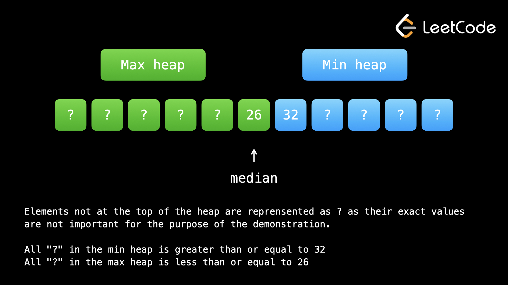

Куча — замечательный инструмент, когда вам нужно неоднократно найти максимальный или минимальный элемент. Давайте рассмотрим некоторые примеры задач.
Пример 1: 1046. Вес последнего камня.
Вам дан массив целых чисел stones, где stones[i] — вес i-го камня. На каждом ходу мы выбираем
два самых тяжелых камня и разбиваем их вместе. Предположим, что два самых тяжелых камня имеют вес
x и y,
причем x <= y. Если x==y, то оба камня уничтожаются. Если x !=y, то
x уничтожается, а y теряет вес x.
Вернуть вес последнего оставшегося камня или 0, если камней не осталось.
В этой задаче нам нужно повторно найти два максимальных элемента. Давайте преобразуем stones в максимальную кучу, чтобы мы могли разместить в ней два максимальных элемента за O(log n), выполнить разгром, а затем снова добавить в кучу (если оба камня не уничтожены) за O(log n). Мы можем продолжать процесс до тех пор, пока не останется один или ноль камней.
Чтобы решить эту проблему, мы можем просто смоделировать процесс. Проблема в том, что повторное нахождение двух самых тяжелых камней может оказаться дорогостоящим. Просто отсортировать входные данные по убыванию и пройти по элементам по порядку не получится, потому что часто в результате удара получается новый камень, который возвращается во входные данные.
С помощью кучи мы можем удалить два максимальных элемента за логарифмическое время. После того, как мы осуществим удар, если у нас останется камень, мы можем добавить его обратно за логарифмическое время. Обратите внимание, что логарифмическое время намного быстрее линейного, поэтому это огромное улучшение по сравнению с использованием обычного массива.
Итак, мы сложили все камни в максимальную кучу. Затем мы просто моделируем процесс до тех пор, пока не останется один или ноль камней. Добавьте 2 максимальных элемента, а затем примените правила, указанные в описании проблемы.
Не сосредотачивайтесь на том, что происходит под капотом — просто помните, что может сделать для вас куча и как использовать операции.
stones = [-stone for stone in stones]
heapq.heapify(stones) # turns an array into a heap in linear time
while len(stones) > 1:
first = abs(heapq.heappop(stones))
second = abs(heapq.heappop(stones))
if first != second:
heapq.heappush(stones, -abs(first - second))
return -stones[0] if stones else 0
Реализация кучи Python реализует только минимальные кучи. Чтобы смоделировать максимальную кучу, мы можем просто сделать все значения, которые мы помещаем в кучу, отрицательными.
При каждом ударе разрушается хотя бы один камень, поэтому итераций может быть не более n. На каждой итерации мы выполняем операции pop и push в куче, длина которой в начале равна n. Это дает нам временную сложность O(n * log n). Куча использует O(n) пространство. Обратите внимание, что в Python мы повторно используем входные данные, поэтому нам следует учитывать их при расчете пространственной сложности, чего мы обычно не делаем.
Пример 2: 2208. Минимальные
операции для уменьшения суммы массива вдвое.
Вам дан массив чисел положительных целых чисел nums. За одну операцию можно выбрать любое число
из nums и
уменьшить его ровно до половины числа. Возвращает минимальное количество операций, позволяющих уменьшить
сумму nums как минимум вдвое.
Как лучше всего выбирать числа для деления пополам? Мы хотим минимизировать количество шагов, поэтому мы хотим максимизировать величину уменьшения nums на каждом шаге. Это означает, что в любой момент мы должны выбрать самый большой элемент. Чтобы отслеживать самый большой элемент в любой момент времени, давайте преобразуем входные данные в максимальную кучу. На каждом шаге мы удаляем максимальное значение x, удаляем x/2 из суммы, а затем помещаем x/2 обратно в кучу.
Это еще один отличный пример того, когда следует использовать кучу: нам нужно несколько раз найти максимальный элемент. Как и в предыдущем примере, недостаточно просто отсортировать входные данные по убыванию и просмотреть элементы по порядку, поскольку элементы добавляются обратно после разделения пополам.
Сначала мы преобразуем входные данные в кучу. Затем мы определяем target как сумму элементов, разделенную на два — это объем сокращения, которого нам нужно достичь.
Теперь, пока target > 0, нам нужно уменьшить сумму. Удалите максимальный элемент x из кучи (это быстро и легко). Уменьшите его до x/2, вычитая x/2 из target, а затем поместив x/2 обратно в кучу.
Куча всегда будет давать нам максимальный элемент за логарифмическое время, даже если мы добавляем элементы обратно.
target = sum(nums) / 2
heap = [-num for num in nums]
heapq.heapify(heap)
ans = 0
while target > 0:
ans += 1
x = heapq.heappop(heap)
target += x / 2
heapq.heappush(heap, x / 2)
return ans
Как видно из двух предыдущих примеров, куча — это замечательная структура данных, когда вам нужно неоднократно найти максимальный или минимальный элемент. Он может обрабатывать вставки и удаления, сохраняя при этом свойство max/min, и все это за логарифмическое время.
Каждая итерация цикла занимает O(logn) время операций с кучей. Количество необходимых операций линейно зависит от n. Хотя вы, возможно, думаете: если бы у нас было огромное количество, его пришлось бы уменьшать вдвое много раз. Верно, но каждая операция над ним также уменьшала бы сумму на большую сумму. Это дает нам временную сложность О(n⋅logn).
Более понятный аргумент в пользу того, почему количество операций ограничено n: вы всегда можете просто выполнить операцию над каждым числом один раз.
Использование нескольких куч встречается редко, и проблемы, требующие этого, обычно более сложны. Если проблема связана с поиском медианы, об этом стоит подумать. Пример, который мы собираемся рассмотреть, включает в себя медианы и 480. Медиану скользящего окна также можно решить с помощью двух куч, хотя мы не будем включать ее в качестве практической задачи, поскольку она очень сложна (вы все равно можете попробовать ее если хочется).
Как и монотонность, это более сложное и редкое понятие. Не расстраивайтесь, если у вас возникли проблемы с его пониманием.
Пример 3: 295. Найти медиану из потока данных.
Медиана — это среднее значение в упорядоченном целочисленном списке. Если размер списка четный, медиана
представляет собой среднее значение двух средних значений. Реализуйте класс MedianFinder:
MedianFinder() инициализирует объект MedianFinder.
void addNum(int num) добавляет целое число в структуру данных.
double findMedian() возвращает медиану всех элементов на данный момент.
Проблема сводится к следующему: найти средний элемент в наборе данных, который постоянно добавляется. Как мы можем использовать кучу, чтобы найти средний элемент вместо минимума или максимума?
Если у нас есть минимальная куча, в которой хранится только большая половина данных, то элемент наверху кучи будет посередине. Аналогично, если у нас есть максимальная куча, в которой хранится только меньшая половина данных, элемент в верхней части кучи будет посередине. Если мы представили набор данных в виде массива, вы можете представить себе, что левую половину раскрасьте в один цвет, а правую — в другой. Цвета обозначают покрытие каждой кучи и «соприкасаются» в середине, где находится вершина обеих куч.
Если мы сохраним кучи одинакового размера, так что каждая куча будет содержать половину данных, то при четном количестве элементов медиана будет средним значением верхних значений обеих куч. При нечетном количестве элементов одна куча будет иметь размер на единицу больше другой. Этот дополнительный элемент — медиана. Не имеет значения, какую кучу мы выберем для хранения медианы, если имеется нечетное число — давайте произвольно выберем максимальную кучу.

Когда мы добавляем в кучу, нам нужно убедиться, что разница между размерами кучи остается неизменной (или в
пределах 1, если количество элементов нечетное). Нам также необходимо убедиться, что все элементы в
минимальной куче больше или равны всем элементам в максимальной куче (иначе аналогия с раскраской будет
нарушена). Для этого можно использовать следующий алгоритм:
1. Поместите num в максимальную кучу (как упоминалось выше, мы произвольно выбрали максимальную
кучу).
2. Вытащите из максимальной кучи и поместите этот элемент в минимальную кучу.
3. После шага 2, если в минимальной куче больше элементов, чем в максимальной куче, извлеките элементы из
минимальной кучи и поместите результат в максимальную кучу.
Опять же, давайте представим набор данных как массив, разделенный пополам и окрашенный в разные цвета. Когда мы извлекаем результат из одной кучи и помещаем результат в другую, это похоже на смещение точки, в которой цвета меняются на один элемент.
Третий шаг — это то, как мы поддерживаем принятое нами решение о том, чтобы максимальная куча хранила дополнительный элемент, если имеется нечетное количество элементов.
Второй шаг — это то, как мы выделяем свойство жирным шрифтом. Представьте себе, что у нас есть набор данных
1, 3, 7, 13, 36, 100, и мы хотим добавить 50. Первоначально мы добавляем его к
максимальной куче на шаге 1,
что делает максимальную кучу 50, 7, 3, 1. Обратите внимание, что он не принадлежит максимальной
куче,
поскольку числа 13 и 36 в минимальной куче меньше. Извлекая из максимальной кучи,
а затем помещая в
минимальную кучу, мы сохраняем свойство.
Поскольку мы (произвольно) выбрали максимальную кучу как кучу, в которой больше элементов, когда общее
количество элементов нечетное, в конечном итоге мы отодвигаем 13 в конце и помещаем их в
максимальную кучу.
После всех операций максимальная куча равна 13, 7, 3, 1, а медиана 13 расположена
правильно.
def __init__(self):
self.min_heap = []
self.max_heap = []
def addNum(self, num: int) -> None:
heapq.heappush(self.max_heap, -num)
heapq.heappush(self.min_heap, -heapq.heappop(self.max_heap))
if len(self.min_heap) > len(self.max_heap):
heapq.heappush(self.max_heap, -heapq.heappop(self.min_heap))
def findMedian(self) -> float:
if len(self.max_heap) > len(self.min_heap):
return -self.max_heap[0]
return (self.min_heap[0] - self.max_heap[0]) / 2
Этот алгоритм позволяет нам иметь Временную сложность O(1) для findMedian и Временную сложность O(logn) для addNum, что делает его невероятно быстрым алгоритмом, где n — количество вызовов addNum на данный момент. Пространственная сложность O(n) для хранения кучи.
Кучи похожи на хэш-карты и в отличие от деревьев/графов или связанных списков тем, что обычно при использовании кучи проблема не ограничивается только кучей. Куча обычно представляет собой просто инструмент для эффективного выполнения чего-либо в алгоритме. В следующей главе (жадной) мы подробнее поговорим о кучах и о том, как они могут помочь нам реализовать эффективные алгоритмы. Перед этим мы поговорим о распространенном шаблоне использования кучи в следующей статье. А пока попробуйте решить эти практические задачи.